Nunca senti tanto hype.
O começo do ano foi real a comunidade esperando alguma novidade da junção das versões enquanto o jp teria o aniversário, só isso.
Nunca senti tanto hype.
O começo do ano foi real a comunidade esperando alguma novidade da junção das versões enquanto o jp teria o aniversário, só isso.
")
2024 começando com o real maior card de todos os tempos.
Antes que eu comece a ironizar tudo, o trunks é inexplicavelmente horrível na forma base, ele é todo travado por condições bestas que só atrapalham ele.
Agora, continuando, o trunks é o melhor card do jogo, pra começar ele tem 50% DE CHANCE DE DEFESA ATIVA, e essa defesa ativa ainda é condicional, só com 3 aliados android/cell saga no time, QUE INCRÍVEL
Ele ainda fica efetivo contra tudo contra um INIMIGO CHAMADO CELL, WOW QUANTOS BOSSES CELL NÓS TEMOS NÉ???? O TRUNKS DESTRÓI TODOS TODOS
Por sinal o buff ali dos aliados tmb dá pra ele um adicional de 70% e 100% de ATK e DEF, então ele é realmente travado a esse time e nada mais
E olha só! Acabou o kit dele, ele só tem isso
Parabéns trunks, sua forma base é muito absurda já pra competir com o resto do jogo, ainda mais que mesmo com a defesa ativa ele ainda não consegue tankar nada
Mas claro, o card não estaria completo sem uma condição horrível de transformação né?
Boa sorte tentando atacar 5 vezes pra finalmente poder se transformar, ou claro, estar contra um Cell no turno 5, que fácil..

E agora ele vira um card muito bom??????
O trunks real faz uma transição de água pro vinho, já que do nada ele se torna um card muito forte
Você poderia dizer que ele é um baita canhão de vidro muito diferenciado, já q se vc sair vivo da forma base, transformado ele fica insano
Pra começar ele tem defesa ativa garantida por 3 turnos, isso já é o suficiente já que quando ele se transformar a luta vai estar na última fase ou no final já, então é..
Ele tem 300% de ATK e DEF (balanceado) e MAIS 200% dependendo do quão alta tá sua vida, isso com mais 100% quando ele faz um super, oq é insano, o salto nos stats dele é absurdo
Por sinal ele tem um super adicional garantido e crítico garantido também, balanceado? Ainda não
Não acabou, o trunks, sendo exatamente esse card incrível que ele é, também tem a mecânica de usar uma active skill mais de uma vez, no caso, 1 vez na forma base e outra na transformação
Onde então na sua INCRÍVEL active de 10 SEGUNDOS ele se aproxima do inimigo, faz um T-Pose, diz 「地獄のような未来は もうたくさんだ!!」/ "Já chega de um futuro infernal!!", e estoura o inimigo, fim da active
Sim, a active é boa, na forma base ela quebra só 1 ataque do inimigo mas transformado ele impede o inimigo de atacar no turno, isso é muito forte, mas de novo, sobreviver os primeiros 5 turnos com esse cara é mais difícil do que parece..
No geral, o trunks é um card horrível onde vc tem q criar um time todo em volta dele pra ajudar ele a transformar e se vc for maluco de levar 2 numa luta, cê pode ter 2 turnos sem ataques oq é bem forte, mas de novo, condições né..
O trunks tem suas falhas, sim, mas que bom que ele veio com um personagem secundário que totalmente vai ajudar ele e não ser pior ainda... né?
")
Eu.. não achei que tinha como piorar.
Esse gohan tá num nível onde não dá pra fazer piada ou ironizar, ele simplesmente é horrível, não tem oq fazer
Ele é um suporte pra heavenly events e mastered evolution, categorias que precisam de uma ajuda, só que ele não ajuda em nada
O gohan é um card que tem a defesa tremendamente baixa pq os stats dele são muito baixos, independente da passiva, oq é engraçado, se ele tivesse stats mais decentes, ele até seria um card "usável", mas ele só não consegue
Em resumo, ele tem uns 240% de ATK e DEF q não ajudam em nada, builda 100% de DEF tomando golpes, oq é impossível já q ele morre pra qualquer coisa, e stacka 50 de ATK no super, que também não adianta pq ele não dá dano 💀
Oq ele tem de diferencial é q ele cura bastante vida, mas de que adianta se ele morre pra tudo e levar ele no time já tá zuando seu HP?
Acho q eu nem preciso explicar mais nada, esse card é horrível, mas tão horrível que não merece nem piada.
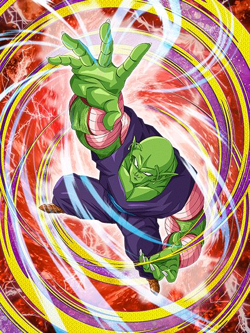
O primeiro piccolo ruim em anos.
Bom, esse piccolo é um suporte que dá dano, é o típico orb changer mas que precisa dos próprios orbs então ele n tá ajudando o time em nada
Literal metade do kit dele vem quando ele pega 4 orbs ou mais, aumentando o suporte dele de 20% pra 50%, dando mais ki, e ganhando 60% de chance de critar, a defesa? Quem precisa disso?
É, ele não tanka absolutamente nada, triste o rapaz.
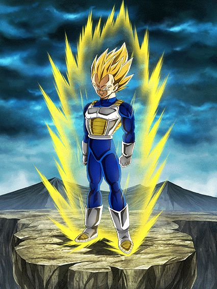
Já pode demorar até o turno 7?
Bom, esse eza tinha algum potencial, já que ele é o último desse trio q foi o freeza, ele e o goku q tem várias transformações, mas é difícil levar ele a sério infelizmente
Tipo, o vegeta tinha um kit base interessante, stack de DEF, leader skill pra pure saiyans, um pouquinho de nuke ali.. era alguma coisa já
Mas o eza não salvou muito.
Infelizmente o vegeta é o card n.28742969 que stacka DEF e não tem nenhuma mecânica defensiva pra ajudar, ou seja, defesa bruta contra bosses que te destroem no turno 1, bem útil
Bom, o eza decidiu que seria muito engraçado dar pra ele 70% de chance de mudar orbs, pq é logicamente divertido fazer isso né (o orb change ainda é horrível), não bastando só isso ele ainda lança um super adicional com 7 orbs, sabe quem lançou em 2023 e com um orb change e mecânica de pegar orbs melhor? Não preciso nem mencionar o goat né..
Enfim, o stack do vegeta aumentou de 30% pra 50%, mas é lógico que não ia ser o bastante né, ele é horrível na forma base.. e infelizmente, não muda muito nas transformações automáticas dele..
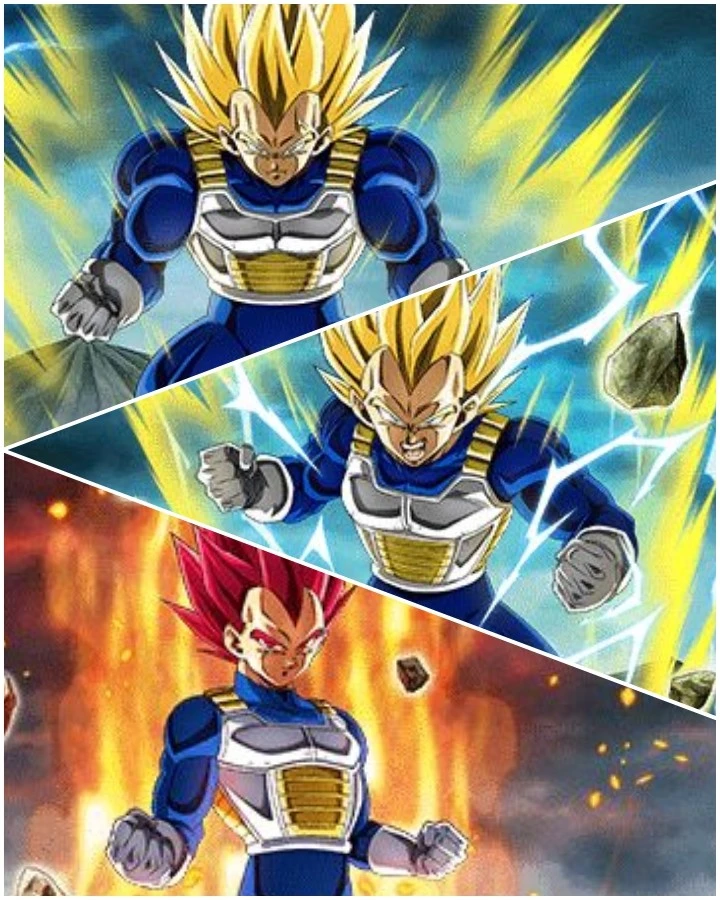
Bom, nessa transição de transformações o vegeta segue praticamente o mesmo com só leves aumentos nos buffs q ele ganha, mas dá pra só ignorar o super vegeta
No ssj2 o orb change dele finalmente se torna garantido e o super adicional agr é com 6 orbs.. parabéns pra transformação q vc pega no melhor cenário possível no turno 5..
No ssj god ele pelo menos fica bom, o nuking dele já tá em 25% de ATK por orb e o super adicional diminuiu de novo pra 5 orbs agora, tá melhorzinho
No geral as transformações até ajudam mas não tanto, ele continua tendo defesa bruta, só tá facilitando ele stackar essa defesa q nem vai ser muito útil..
Pelo menos depois de tudo isso né..

Pronto, agora ele é usável.
Depois de passar por 20 transformações, o vegeta realmente vira um card bom, já que no turno 1 ele muda todos TODOS os orbs pra phy, assim automaticamente dando pra ele a melhor nuke possivel, além de ainda assim manter o orb change depois
Agr uma coisa que me deixa irritado é o fato do super adicional dele continuar sendo com 5 orbs, ok, nada de errado, mas agr ele dá crítico garantido caso vc pegue 23 orbs, vc literalmente dá crítico garantido no turno da nuke e real nunca mais, como assim???
Tirando isso, obviamente vc stackou antes de chegar aq e com 2 supers o vegeta tem uma defesa boa, mas olha só que grande novidade, demora demais pra chegar no blue e ele é praticamente só bom em 1 turno, depois acaba
No geral um eza que tinha potencial e que mataram completamente, triste q dos 3 cards nesse estilo, nenhum é usável direito..
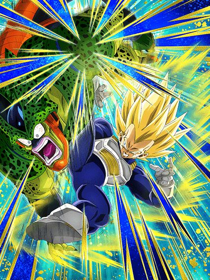
É melhor você estar contra um cell parte 2 a vingança dos derrotados (sim estou falando do trunks teq)
Pode até parecer engraçado, mas esse vegeta até q é um card decente contra um inimigo androids, e contra um cell ele é realmente forte, mas ele é travado nisso, tem crítico garantido e adicional garantido blá blá blá.. sem um inimigo específico ele não faz nada, eles precisam parar de restringir cards desse jeito..
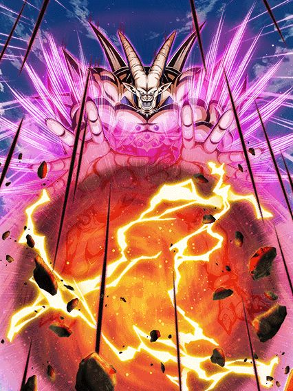
Quer saber? Retiro oq eu disse sobre a Kale, ESSE sim é o card com uma leader skill pra ninguém.
O Omega é o LR carnival mais insano de todos, tendo sua FANTÁSTICA leader skill pra GT BOSSES, MEU DEUS QUE CATEGORIA INCRÍVEL
Bom, se vc excluir o time inteiro do omega, ele é um card muito bom, os debuffs dele são muito bons, o dano dele leva um tempo pra buildar mas é bom, ele é orb changer, e um tank brabo
O grande problema é que pro omega ser bom defensivamente, ele precisa de um time inteiro GT bosses e isso é praticamente suicídio, o time tem 2 cards bons incluindo ele mesmo
Tipo, em geral o omega tem um design focado no slot 1, e ser um tank, tipo, eles querem muito que ele ajude o time, ele literalmente tem muita defesa e redução de dano, uma active forte que dá um dano legal, até um revive o cara tem
Por sinal.. que revive incrível ein.. ele te encara e conversa por 5 horas
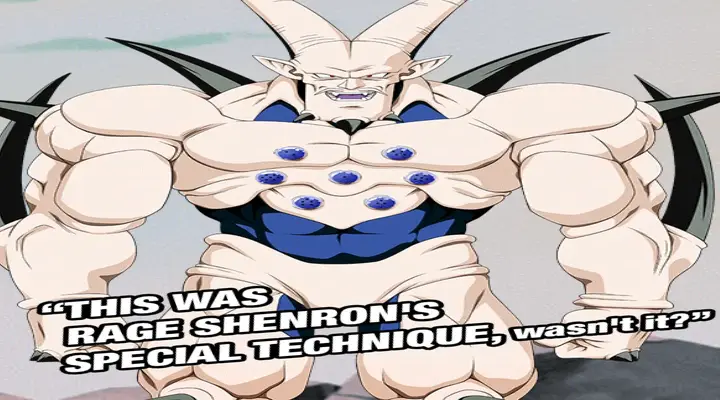
(é difícil tankar essa imagem slk)
Voltando, o Omega pelo jeito foi feito pra ser "O herói de GT bosses" mas pô.. ele sozinho não consegue carregar o time, eles se esforçaram pra ele ser bom mas ele é apenas mais um card extreme sem time..
Por sinal as OSTs desse cara são muito boas, sinistro
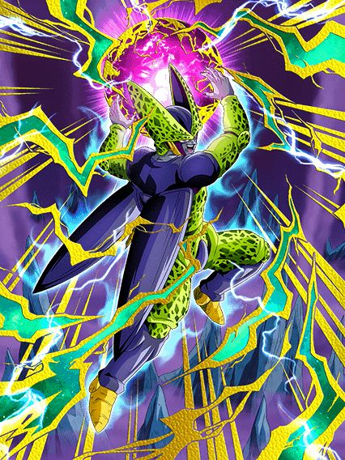 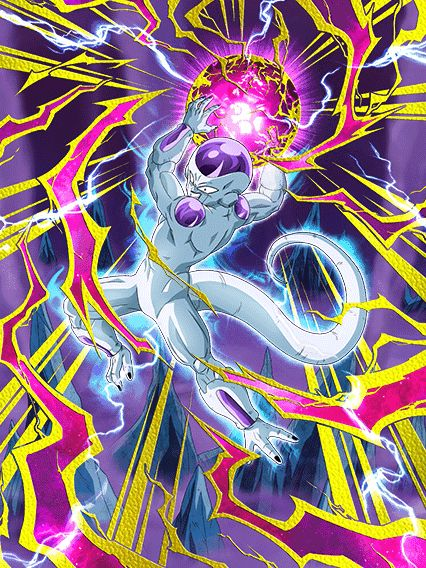
Literalmente "inguais".
Eu gosto desses caras pq eles tem o exato mesmo kit, mesmos buffs, adicional garantido se todos aliados forem revenge, gt bosses ou sworn enemies e mais ATK e ficam efetivos se o inimigo estiver com uma condição
E essa é a real única diferença q eles tem, o Cell ganha esse buff se o inimigo estiver stunado e o Freeza se o inimigo estiver selado
Obviamente querem que a pessoa use eles como uma rotação sempre mas pô, eles tem o mesmo kit e já deu pra ver q nenhum é slot 1 né..
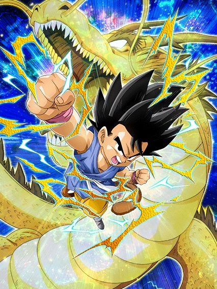
Útil por 3 turnos.
Esse gokuzinho é levemente interessante já q ele tem defesa ativa por 3 turnos
É o melhor q ele tem, já q a defesa dele depois q isso acabar é muito podre
Ele tem bastante crítico e tals mas.. o cara ganha buffs enfrentando um inimigo gt bosses, e se os cards jogáveis já são poucos, imagina os bosses..

O destruidor de pure saiyans.
Pessoalmente eu amo muito esse card, ele é genial cara
Tipo SIM, o baby só tem metade do kit se tiver um inimigo pure saiyans mas MLK, que kit
O cara tem 80% de chance de critar, um monte de ATK e DEF, links fortes de vilão (agora ele tem o baby teq do tanabata pra ajudar ele), e ainda tem habilidades defensivas a mais
Se ele cair abaixo de 40% de HP, ele ganha 150% a mais de DEF e 50% de chance de desviar, mas tem um extra..
Essa também é a condição pra ele se transformar, ou seja, depois q vc sair da transformação q vai impedir o boss de dar supers, AOEs e etc, vc ainda faz questão de tankar tranquilamente tudo
E já q falei da transformação..
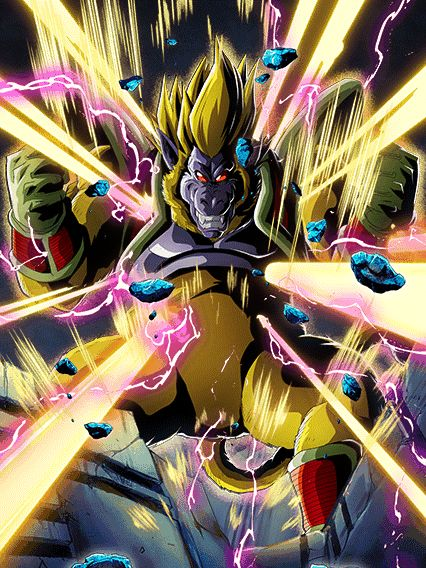
Muito bom.
Fácil de pegar Ki, tem 50% de chance de critar e bom dano, pode durar bastante turnos, bem maneiro em geral, literalmente um pequeno extra pra ajudar o baby em eventos difíceis
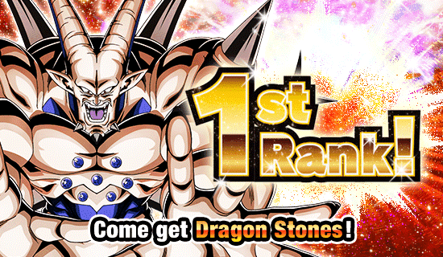
Eu juro que Macau tem alguma relação secreta com GT bosses.
É serio, é muito bizarro, tipo, ano passado fez sentido o super 17, ele era a última coisa antes do aniversário, mas o omega?? Depois dele tem os androids 💀
Jamais vou recusar as 7 ds, mas que é estranho, é.
Medo doq Macau irá fazer quando lançar um baby dokkan fest (assustador)
Você chegou ao fim dessa página!
Obrigado por ler tudo, e fica a vontade pra ver outras